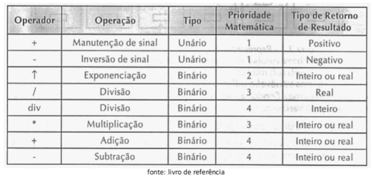
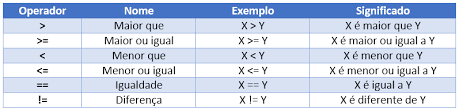
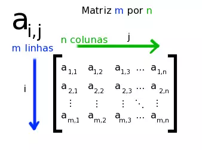

pensamento computacional esta baseado em 4 pilares:
dividir em partes(subproblemas) para facilitar a resolução
identificar tendêcias, padrões , singularidades ou diferenças
pergar algo do mundo concreto e levar para o mundo das idéias generalizar alguma solucao, como por exemplo classes
define instruções passo a passo, e deve estar sempre refinando, testando e aperfeiçoando
processo de de segmentar um problema complexo e determinar partes menores e gerenciáveis. Depois recompor o o problema original combinando os elementos de maneira coerente no processo de reconstrução por uma ordem sequêncial(dependência entre as tarefas) ou paralela(separadas,concomitantemente).
como decompor? indentificar os processos, indentificar os componentes e seus papeis e interdependência.
saber auaç a finalidade, a interface , funcionalidade e pré-requisitos.
modelo base, estruturas invariantes e repetição. Reconhecemos atraves de similaridades e diferenças ,servindo para generalizar e obter resoluções para problemas diferentes.
classificar dados, atravé de características , pontos essenciais, generalizar
computador recebe, manipula e armazena os dados. descreve o problema por meio de ferramentas, linguagem de programação com uma sequência de passos e execução de tarefas específicas executadas passo a passo. Compreender o problema, definir dados de entrada, definir processamento, definir dados de saída, utilizar um metodo de contrução.
Raciocínio lógico sendo uma forma de pensamento para resolver uma situação, podendo ser:
Organização e planejamento com fim de resolver um problema com a implantação de um problema
Técnicas de lógica de programação
muito associado a matemática, execução sequênciada ordenada
organizacao e disposicao de ordem do componentes essenciais. Escrita de programas, entendimento, validação e manutenção(facilitador).
define uma hierarquia,
partes independentes, controlada por um conjunto de regras, temos os dados de entrada, processo de transformação e os dados de saída.
tipos de dados: numéricos, Caracteres, lógico.
Variável : espaço de memória reservado podendo ser de ação ou de controle.
São linguagens de palavra chave de uma determinada programação com a função de tratar os dados.
Calculos matemáticos com operadores
condições que se satisfeita executa uma determinada operaçao, caso contrario acarreta em uma exceção.As condições podem ser simples, compostas ou encadeadas.
estruturadas de repetição serve para quando precisamos executar um mesmo código mais de uma vez, evitando erros, com redução de linhas.
vetor: caracterizado por uma variavel dimensionada com um tamanho pré-fixado
matriz:estruturas constituídas por linha e coluna , sentido horizontal e vertical respectivamente.
sao blocos de códigos reutilizáveis, com o fim de colocar ele em espaços específicos, deixando o código mias legível
inserção e recebimento de dados do mundo real , por meio de interfaces relacionadas ao ambiente computacional podendo inserir e imprimir dados.